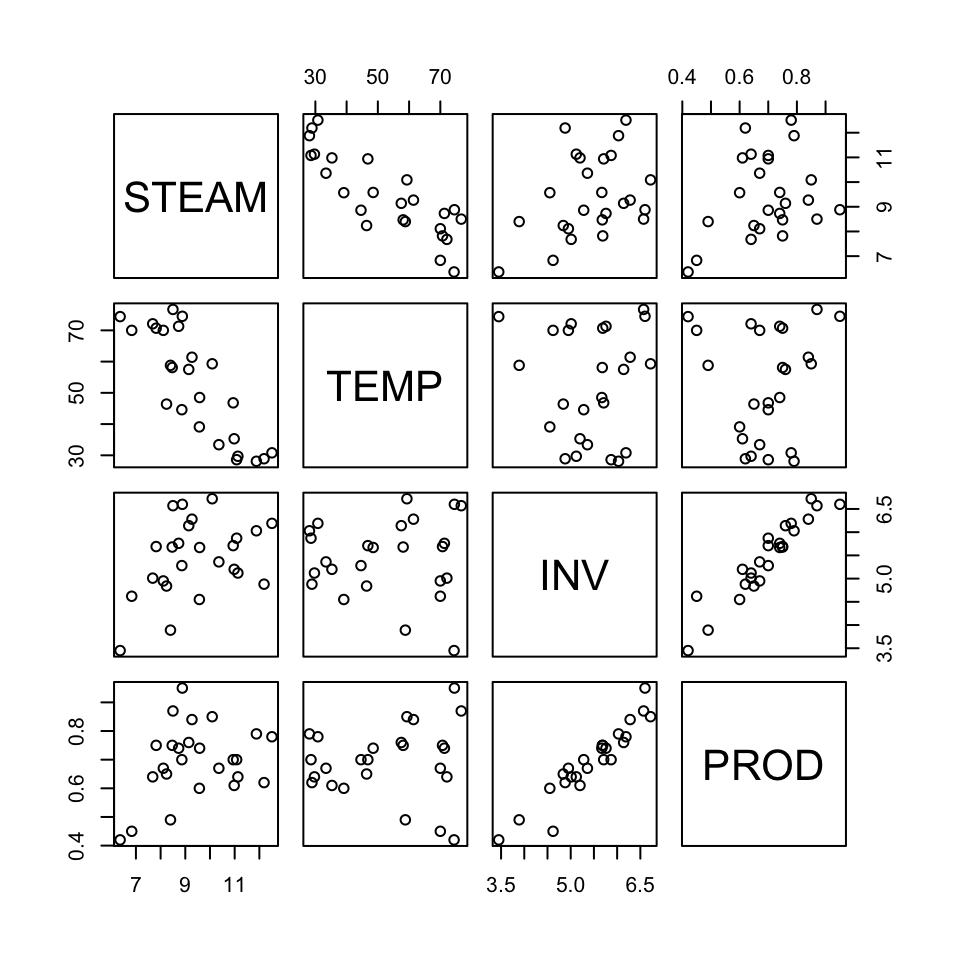
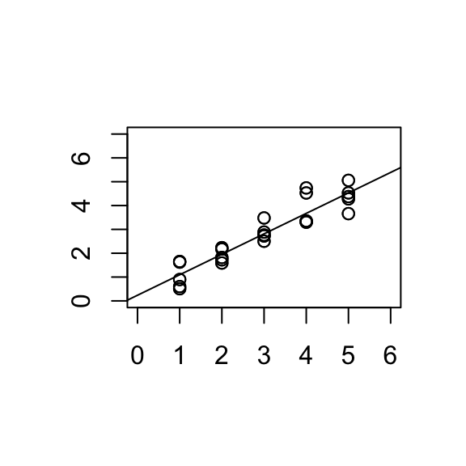
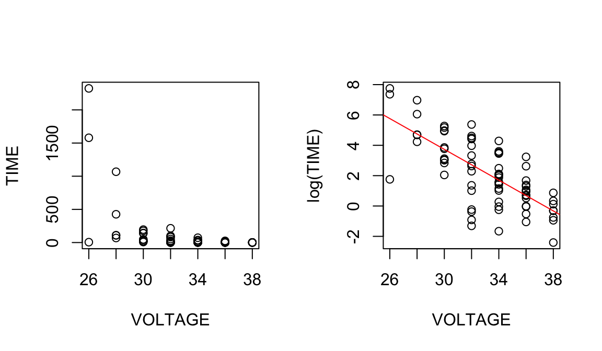
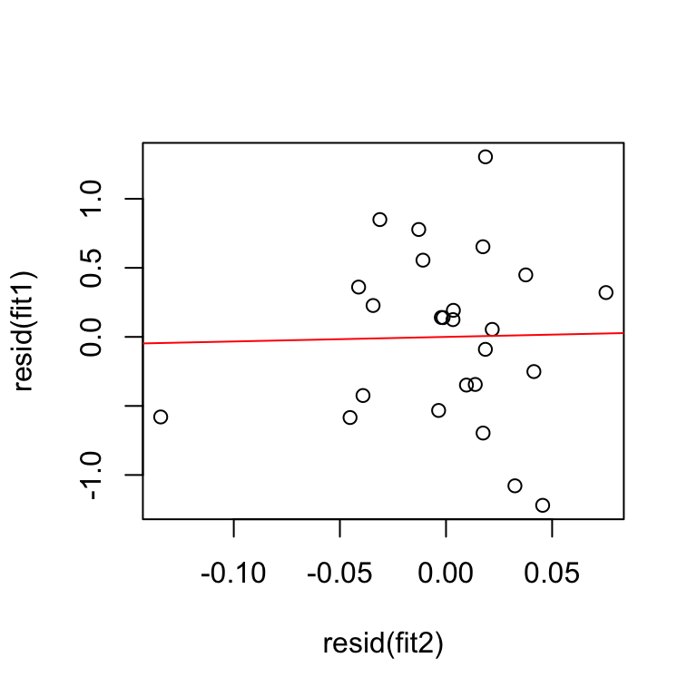
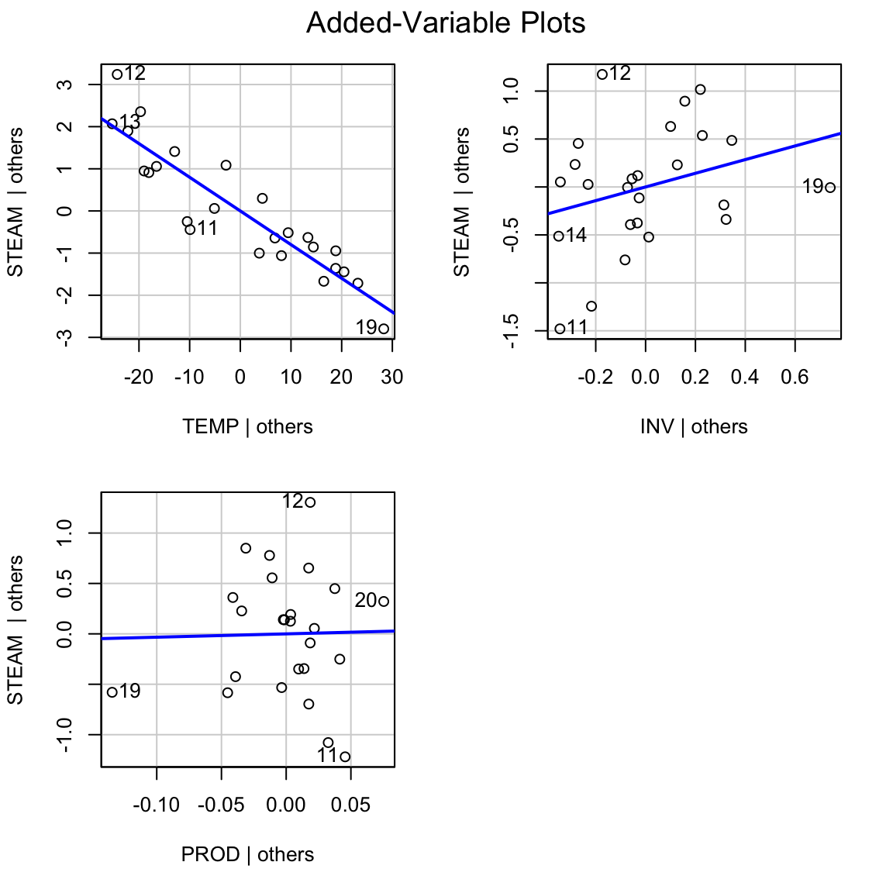

5 Model comparisons and testing for lack of fit
5.1 F-tests for comparing two models
5.1.1 Example:
Model A: \(\mathbb{E}[y] = \beta_0 + \beta_1 x_1\)
Model B: \(\mathbb{E}[y] = \beta_0 + \beta_1 x_1 + \beta_2 x_2 + \beta_3 x_3\)
i.e. in Model A, \(\beta_2=\beta_3=0\).
Model A is the reduced or simpler model and model B is the full model.
The \(\mbox{SSE}\) for Model B will be smaller than the \(\mbox{SSE}\) for Model A but is the reduction enough to justify the two extra parameters?
We have:
Model A:
\[\mbox{SST} = \mbox{SSR}(A) + \mbox{SSE}(A)\]
Model B:
\[\mbox{SST} = \mbox{SSR}(B) + \mbox{SSE}(B)\]
Note:
\[\mbox{SSE}(A)-\mbox{SSE}(B)=\mbox{SSR}(B)-\mbox{SSR}(A)\]
5.1.2 F-test to compare models:
Model A: \(\mathbb{E}[y] = \beta_0 + \beta_1 x_1 + ... + \beta_q x_q\)
Model B: \(\mathbb{E}[y] = \beta_0 + \beta_1 x_1 + ... + \beta_k x_k\)
where \(q<k\) and Model A is nested within Model B.
\(H_0\): \(\beta_{q+1} = \beta_{q+2} = ... = \beta_k = 0\)
\(H_A\): At least one \(\beta_{q+1}, ... , \beta_k \neq 0.\)
\[F =\frac{(\mbox{SSE}(A)-\mbox{SSE}(B))/(k-q)}{\mbox{SSE}(B)/(n-p)}.\]
Under \(H_0\), \[F \sim F_{(k-q),(n-p)},\] where \(p = (k+1).\)
Note: Equivalently, the F-test can be written as:
\[F =\frac{(\mbox{SSR}(B)-\mbox{SSR}(A))/(k-q)}{\mbox{SSE}(B)/(n-p)}.\]
Note: Models A and B must be hierarchical for the F-test to be valid.
5.1.3 Example: Steam data
This data is from a study undertaken to understand the factors that caused energy consumption in detergent manufacturing over a 25 month period. Example from Draper and Smith (1966).
The data variables are:
y = STEAM Pounds of steam used monthly.
x1 = TEMP Average atmospheric temperature (\(^o\)F).
x2 = INV Inventory: pounds of real fatty acid in storage per month.
x3 = PROD Pounds of crude glycerin made.
x4 = WIND Average wind velocity (in mph).
x5 = CDAY Calendar days per month.
x6 = OPDAY Operating days per month.
x7 = FDAY Days below \(32^o\)F.
x8 = WIND2 Average wind velocity squared.
x9 = STARTS Number of production start-ups during the month.

Model A: \(\mathbb{E}[y] = \beta_0 + \beta_1 x_1\)
Model B: \(\mathbb{E}[y] = \beta_0 + \beta_1 x_1 + \beta_2 x_2 + \beta_3 x_3\)
where \(x_1\) = TEMP, \(x_2\) = INV, \(x_3\) = PROD.
modelA <- lm(STEAM ~ TEMP)
modelB <- lm(STEAM ~ TEMP + INV + PROD)summary(modelA)##
## Call:
## lm(formula = STEAM ~ TEMP)
##
## Residuals:
## Min 1Q Median 3Q Max
## -1.6789 -0.5291 -0.1221 0.7988 1.3457
##
## Coefficients:
## Estimate Std. Error t value Pr(>|t|)
## (Intercept) 13.62299 0.58146 23.429 < 2e-16 ***
## TEMP -0.07983 0.01052 -7.586 1.05e-07 ***
## ---
## Signif. codes: 0 '***' 0.001 '**' 0.01 '*' 0.05 '.' 0.1 ' ' 1
##
## Residual standard error: 0.8901 on 23 degrees of freedom
## Multiple R-squared: 0.7144, Adjusted R-squared: 0.702
## F-statistic: 57.54 on 1 and 23 DF, p-value: 1.055e-07summary(modelB)##
## Call:
## lm(formula = STEAM ~ TEMP + INV + PROD)
##
## Residuals:
## Min 1Q Median 3Q Max
## -1.2348 -0.4116 0.1240 0.3744 1.2979
##
## Coefficients:
## Estimate Std. Error t value Pr(>|t|)
## (Intercept) 9.514814 1.062969 8.951 1.30e-08 ***
## TEMP -0.079928 0.007884 -10.138 1.52e-09 ***
## INV 0.713592 0.502297 1.421 0.17
## PROD 0.330497 3.267694 0.101 0.92
## ---
## Signif. codes: 0 '***' 0.001 '**' 0.01 '*' 0.05 '.' 0.1 ' ' 1
##
## Residual standard error: 0.652 on 21 degrees of freedom
## Multiple R-squared: 0.8601, Adjusted R-squared: 0.8401
## F-statistic: 43.04 on 3 and 21 DF, p-value: 3.794e-09anova(modelA)## Analysis of Variance Table
##
## Response: STEAM
## Df Sum Sq Mean Sq F value Pr(>F)
## TEMP 1 45.592 45.592 57.543 1.055e-07 ***
## Residuals 23 18.223 0.792
## ---
## Signif. codes: 0 '***' 0.001 '**' 0.01 '*' 0.05 '.' 0.1 ' ' 1anova(modelB)## Analysis of Variance Table
##
## Response: STEAM
## Df Sum Sq Mean Sq F value Pr(>F)
## TEMP 1 45.592 45.592 107.2523 1.046e-09 ***
## INV 1 9.292 9.292 21.8588 0.0001294 ***
## PROD 1 0.004 0.004 0.0102 0.9203982
## Residuals 21 8.927 0.425
## ---
## Signif. codes: 0 '***' 0.001 '**' 0.01 '*' 0.05 '.' 0.1 ' ' 1\(H_0\): \(\beta_2 = \beta_3 = 0\)
\(H_A\): At least one \(\beta_2, \beta_3 \neq 0\)
\[\begin{align*} F_{obs} & = \frac{(\mbox{SSE}(A)-\mbox{SSE}(B))/(k-q)}{\mbox{SSE}(B)/(n-p)}\\ & = \frac{(18.223-8.927)/(3-1)}{8.927/(25-4)}=10.93.\\ \end{align*}\]\(F_{(0.05,2,21)} = 3.467\), \(F_{(0.01,2,21)} = 5.780\)
P-value \(<0.01\), we reject \(H_0\) and conclude that at least one of \(\beta_2\), \(\beta_3\) differ from 0.
anova(modelA, modelB)## Analysis of Variance Table
##
## Model 1: STEAM ~ TEMP
## Model 2: STEAM ~ TEMP + INV + PROD
## Res.Df RSS Df Sum of Sq F Pr(>F)
## 1 23 18.223
## 2 21 8.927 2 9.2964 10.934 0.0005569 ***
## ---
## Signif. codes: 0 '***' 0.001 '**' 0.01 '*' 0.05 '.' 0.1 ' ' 15.2 Sequential sums of squares
5.2.1 Example:
Model A: \(\mathbb{E}[y] = \beta_0 + \beta_1 x_1\)
Model B: \(\mathbb{E}[y] = \beta_0 + \beta_1 x_1 + \beta_2 x_2+ \beta_3 x_3\)
As noted earlier, the reduction in \(\mbox{SSE}\) going from Model A to B, is equivalent to the increase in \(\mbox{SSR}\), i.e. \[\mbox{SSE}(A)-\mbox{SSE}(B)=\mbox{SSR}(B)-\mbox{SSR}(A).\]
We can denote: \[\mbox{SSR}(B|A)=\mbox{SSR}(B)-\mbox{SSR}(A).\]
These are the sequential sums of squares. We can write: \[\begin{align*} \mbox{SST} & = \mbox{SSR}(B) + \mbox{SSE}(B)\\ & = \mbox{SSR}(A) +\mbox{SSR}(B) - \mbox{SSR}(A) + \mbox{SSE}(B)\\ & = \mbox{SSR}(A) + \mbox{SSR}(B|A) + \mbox{SSE}(B).\\ \mbox{SST} - \mbox{SSE}(B) &= \mbox{SSR}(A) + \mbox{SSR}(B|A)\\ \mbox{SSR}(B) &= \mbox{SSR}(A) + \mbox{SSR}(B|A).\\ \end{align*}\]If model A is appropriate, \(\mbox{SSR}(B|A)\) should be small.
5.2.2 Example: Steam data
Model A: \(\mathbb{E}[y] = \beta_0\)
Model B: \(\mathbb{E}[y] = \beta_0 + \beta_1 x_1\)
Model C: \(\mathbb{E}[y] = \beta_0 + \beta_1 x_1 + \beta_2 x_2\)
Model D: \(\mathbb{E}[y] = \beta_0 + \beta_1 x_1 + \beta_2 x_2 + \beta_3 x_3\)
| SOURCE | df | seqSS | Notation |
|---|---|---|---|
| TEMP | 1 | 45.592 | SSR(B|A) |
| INV | 1 | 9.292 | SSR(C|B) |
| PROD | 1 | 0.004 | SSR(D|C) |
From the ANOVA table,
\[\begin{align*} \mbox{SSR}(D)& =54.889\\ & = \mbox{SSR}(B|A) + \mbox{SSR}(C|B) + \mbox{SSR}(D|C)\\ \end{align*}\]We can use the F-test for comparing two models to test Seq SS.
1):
Model A: \(\mathbb{E}[y] = \beta_0\)
Model D: \(\mathbb{E}[y] = \beta_0 + \beta_1 x_1 + \beta_2 x_2 + \beta_3 x_3\)
\(H_0\): \(\beta_1 = \beta_2 = \beta_3 = 0\)
\(H_a\): Not all \(\beta_i\) are 0
\(\mbox{SSR}(A) = 0\)
\(\mbox{SSR}(D|A) = \mbox{SSR}(D) = 54.889.\)
\[F_{obs} = \frac{\mbox{SSR}(D|A)/(k-q)}{\mbox{SSE}(D)/(n-p)} = \frac{54.889/(3-0)}{8.927/(25-4)}=43.04 \]
P-value \(< 0.001\), we reject \(H_0\) and conclude that not all \(\beta_i\) are 0.
2):
Model C: \(\mathbb{E}[y] = \beta_0 + \beta_1 x_1 + \beta_2 x_2\)
Model D: \(\mathbb{E}[y] = \beta_0 + \beta_1 x_1 + \beta_2 x_2 + \beta_3 x_3\)
\(H_0\): \(\beta_3 = 0\)
\(H_a\): \(\beta_3 \neq 0\)
\(\mbox{SSR}(D|C) = 0.004\)
\[F_{obs} = \frac{\mbox{SSR}(D|C)/(k-q)}{\mbox{SSE}(D)/(n-p)} = \frac{0.004/1}{8.927/21} = 0.01\]
\(F_{(0.1,1,21)} = 2.96096\), so P-value \(>0.05\).
We fail to reject \(H_0\) and conclude there is no evidence \(\beta_3 \neq 0\), i.e. \(x_3\) is not needed in the model.
This F-test is equivalent to a t-test for \(\beta_3\): \[T = 0.1\] \[F = (0.1)(0.1) = 0.01\]
The p-value for both tests \(= 0.92\).
Note: The Seq SS values depend on the order in which the variables are added to the model (unless the variables are uncorrelated).
5.2.3 Example: Steam cont’d in MTB
Regression Analysis: STEAM versus TEMP
Analysis of Variance
Source DF Adj SS Adj MS F-Value P-Value
Regression 1 45.5924 45.5924 57.54 0.000
TEMP 1 45.5924 45.5924 57.54 0.000
Error 23 18.2234 0.7923
Lack-of-Fit 22 17.4042 0.7911 0.97 0.680
Pure Error 1 0.8192 0.8192
Total 24 63.8158
Model Summary
S R-sq R-sq(adj) R-sq(pred)
0.890125 71.44% 70.20% 66.32%
Coefficients
Term Coef SE Coef T-Value P-Value VIF
Constant 13.623 0.581 23.43 0.000
TEMP -0.0798 0.0105 -7.59 0.000 1.00
Regression Equation
STEAM = 13.623 -0.0798TEMP Regression Analysis: STEAM versus TEMP, INV, PROD
Analysis of Variance
Source DF Adj SS Adj MS F-Value P-Value
Regression 3 54.8888 18.2963 43.04 0.000
TEMP 1 43.6895 43.6895 102.78 0.000
INV 1 0.8580 0.8580 2.02 0.170
PROD 1 0.0043 0.0043 0.01 0.920
Error 21 8.9270 0.4251
Total 24 63.8158
Model Summary
S R-sq R-sq(adj) R-sq(pred)
0.651993 86.01% 84.01% 79.77%
Coefficients
Term Coef SE Coef T-Value P-Value VIF
Constant 9.51 1.06 8.95 0.000
TEMP -0.07993 0.00788 -10.14 0.000 1.05
INV 0.714 0.502 1.42 0.170 9.51
PROD 0.33 3.27 0.10 0.920 9.55
Regression Equation
STEAM = 9.51 -0.07993TEMP +0.714INV +0.33PROD
Regression \(>\) Options \(>\) sum of squares tests \(>\) sequential
Regression Analysis: STEAM versus TEMP, INV, PROD
Analysis of Variance
Source DF Seq SS Seq MS F-Value P-Value
Regression 3 54.8888 18.2963 43.04 0.000
TEMP 1 45.5924 45.5924 107.25 0.000
INV 1 9.2921 9.2921 21.86 0.000
PROD 1 0.0043 0.0043 0.01 0.920
Error 21 8.9270 0.4251
Total 24 63.8158
Model Summary
S R-sq R-sq(adj) R-sq(pred)
0.651993 86.01% 84.01% 79.77%
Coefficients
Term Coef SE Coef T-Value P-Value VIF
Constant 9.51 1.06 8.95 0.000
TEMP -0.07993 0.00788 -10.14 0.000 1.05
INV 0.714 0.502 1.42 0.170 9.51
PROD 0.33 3.27 0.10 0.920 9.55
Regression Equation
STEAM = 9.51 - 0.07993TEMP + 0.714INV + 0.33PRODRegression \(>\) Options \(>\) sum of squares tests \(>\) sequential, but change the order in which the predictors are input in MTB. Output below is MTB17, MTB18 rearranges them in the order TEMP INV PROD.
Regression Analysis: STEAM versus PROD, INV, TEMP
Analysis of Variance
Source DF Seq SS Seq MS F-Value P-Value
Regression 3 54.889 18.2963 43.04 0.000
PROD 1 5.958 5.9577 14.02 0.001
INV 1 5.242 5.2415 12.33 0.002
TEMP 1 43.690 43.6895 102.78 0.000
Error 21 8.927 0.4251
Total 24 63.816
Model Summary
S R-sq R-sq(adj) R-sq(pred)
0.651993 86.01% 84.01% 79.77%
Coefficients
Term Coef SE Coef T-Value P-Value VIF
Constant 9.51 1.06 8.95 0.000
PROD 0.33 3.27 0.10 0.920 9.55
INV 0.714 0.502 1.42 0.170 9.51
TEMP -0.07993 0.00788 -10.14 0.000 1.05
Regression Equation
STEAM = 9.51 + 0.33PROD + 0.714INV - 0.07993TEMPThe anova and aov functions in R implement a sequential sum of squares (type I). Function Anova(, type= 2) in library(car) gives the adjusted SS (type II)
modelB <- lm(STEAM ~ TEMP + INV + PROD)
anova(modelB)## Analysis of Variance Table
##
## Response: STEAM
## Df Sum Sq Mean Sq F value Pr(>F)
## TEMP 1 45.592 45.592 107.2523 1.046e-09 ***
## INV 1 9.292 9.292 21.8588 0.0001294 ***
## PROD 1 0.004 0.004 0.0102 0.9203982
## Residuals 21 8.927 0.425
## ---
## Signif. codes: 0 '***' 0.001 '**' 0.01 '*' 0.05 '.' 0.1 ' ' 1anova(lm(STEAM ~ PROD + INV + TEMP))## Analysis of Variance Table
##
## Response: STEAM
## Df Sum Sq Mean Sq F value Pr(>F)
## PROD 1 5.958 5.958 14.015 0.001197 **
## INV 1 5.242 5.242 12.330 0.002076 **
## TEMP 1 43.690 43.690 102.776 1.524e-09 ***
## Residuals 21 8.927 0.425
## ---
## Signif. codes: 0 '***' 0.001 '**' 0.01 '*' 0.05 '.' 0.1 ' ' 1#library(car)
Anova(modelB, type= 2)## Anova Table (Type II tests)
##
## Response: STEAM
## Sum Sq Df F value Pr(>F)
## TEMP 43.690 1 102.7760 1.524e-09 ***
## INV 0.858 1 2.0183 0.1701
## PROD 0.004 1 0.0102 0.9204
## Residuals 8.927 21
## ---
## Signif. codes: 0 '***' 0.001 '**' 0.01 '*' 0.05 '.' 0.1 ' ' 15.3 Testing for lack of fit
When replicate values of response are available at some or all of the \(X\) values, a formal test of model adequacy is available.

The test is based on comparing the fitted value to the average response for that level of \(X\).
NOTATION: Suppose there are \(g\) different values of \(X\) and at the \(i^{th}\) of these, there are \(n_i\) observations of \(Y\).
Let \(\bar{y}_{i.}=\frac{1}{n_i}\sum_{j=1}^{n_i} y_{ij}\), \(\quad i=1, ..., g.\)
Note: this is the estimate of the group means in the 1-way ANOVA model (means model): \(y_{ij} = \mu_{i} + \epsilon_{ij}\), where \(\epsilon_{ij}\) iid \(N(0, \sigma^2)\).
Then the pure error sums of squares,
\[\begin{align*} \mbox{SS}_{\mbox{PE}}& =\sum_{i=1}^g \sum_{j=1}^{n_i} (y_{ij}- \bar{y}_{i.})^2\\ df_{PE} & = \sum_{i=1}^g (n_i-1)=n-g, \hspace{1cm} \mbox{where } n=n_1+...+n_g.\\ \end{align*}\]Therefore
\[\frac{\sum_{i=1}^g \sum_{j=1}^{n_i} (y_{ij}- \bar{y}_{i.})^2}{n-g}\]
is an estimator of \(\sigma^2\).
NOTE:
- Here we use the replicates to obtain an estimate of \(\sigma^2\) which is independent of the fitted model (SLR).
*This estimator of \(\sigma^2\) corresponds to the \(\mbox{MSE}\) in the ANOVA table for the 1-way ANOVA model.
The 1-way ANOVA model has \(g\) parameters. The SLR model has \(2\) parameters. The latter is more restrictive as it requires linearity.
\(df_{PE} = n-g\),
\(df_{SLR} = n-2\).
The SLR model has a residual SS which is \(\geq\) residual SS from the means model, i.e. \(\mbox{SSE} \geq \mbox{SS}_{\mbox{PE}}\).
A large difference \(\mbox{SSE} - \mbox{SS}_{\mbox{PE}}\) indicates lack of fit of the regression line.
\(\mbox{SS}(\mbox{lack of fit})= \mbox{SSE} - \mbox{SS}_{\mbox{PE}} = \sum_{i,j} (\hat{y}_{i,j} - \bar{y}_i)^2\), the sum of squared distances of between the SLR estimate and the means model estimate of \(\mathbb{E}(Y_{i,j})\).
Lack of fit is tested by the statistic:
\[F_{obs}=\frac{\left ( \mbox{SSE}-\mbox{SS}_{\mbox{PE}} \right )/(g-2)}{\mbox{SS}_{\mbox{PE}}/(n-g)}.\]
\(H_0\): Regression model fits well
\(H_A\): Regression model displays lack of fit
Under \(H_0\), \(F_{obs} \sim F_{g-2,n-g}\).
Note: This generalises to multiple predictors - the pure error estimate of \(\sigma^2\) is based on SS between \(y_i\) for cases with the same values on all predictors. \(df_{SLR} = p\) instead of 2.
Reject for large values of \(F_{obs}\).
5.3.1 Example: Voltage
Example from Ramsey and Schafer (2002) (case0802 in library(Sleuth3)).
Batches of electrical fluids were subjected to constant voltages until the insulating properties of the fluid broke down.
\(Y\): time to breakdown
\(X\): Voltage
The scatterplot of \(Y\) vs. \(X\) shows evidence of non-linearity and non-constant variance. The response was log transformed to resolve this.

\(H_0: \beta_1=0\)
\(H_A: \beta_1 \neq 0\)
\(F = 78.4\), \(p<0.001\). We reject \(H_0\) and conclude that \(\beta_1 \neq 0\).
\(H_0:\) S.L.R model is appropriate/correct model
\(H_A:\) S.L.R model has lack of fit.
\[F=\frac{(180.07-173.75)/(7-2)}{173.75/(76-7)}=0.5\]
\(F=0.50, p=0.773\). We conclude that there is no evidence of lack of fit.
One-way ANOVA: LOG_TIME versus CODE
Analysis of Variance
Source DF Adj SS Adj MS F-Value P-Value
CODE 6 196.5 32.746 13.00 0.000
Error 69 173.7 2.518
Total 75 370.2
Model Summary
S R-sq R-sq(adj) R-sq(pred)
1.58685 53.07% 48.99% 38.72%
Regression Analysis: LOG_TIME versus VOLTAGE
Analysis of Variance
Source DF Adj SS Adj MS F-Value P-Value
Regression 1 190.151 190.151 78.14 0.000
VOLTAGE 1 190.151 190.151 78.14 0.000
Error 74 180.075 2.433
Lack-of-Fit 5 6.326 1.265 0.50 0.773
Pure Error 69 173.749 2.518
Total 75 370.226
Model Summary
S R-sq R-sq(adj) R-sq(pred)
1.55995 51.36% 50.70% 48.50%
Regression Equation
LOG_TIME = 18.96 - 0.5074 VOLTAGER code
anova(lm(log(TIME)~VOLTAGE))## Analysis of Variance Table
##
## Response: log(TIME)
## Df Sum Sq Mean Sq F value Pr(>F)
## VOLTAGE 1 190.15 190.151 78.141 3.34e-13 ***
## Residuals 74 180.07 2.433
## ---
## Signif. codes: 0 '***' 0.001 '**' 0.01 '*' 0.05 '.' 0.1 ' ' 1anova(lm(log(TIME)~as.factor(VOLTAGE)))## Analysis of Variance Table
##
## Response: log(TIME)
## Df Sum Sq Mean Sq F value Pr(>F)
## as.factor(VOLTAGE) 6 196.48 32.746 13.004 8.871e-10 ***
## Residuals 69 173.75 2.518
## ---
## Signif. codes: 0 '***' 0.001 '**' 0.01 '*' 0.05 '.' 0.1 ' ' 1
5.4 Added variable plots
In simple linear regression we can assess the importance of a predictor by:
- t-statistic
- \(\mbox{SSR}\)
- \(R^2\)
- \(Y\)-\(X\) plot.
The analogues in multiple regression for assessing the importance of a predictor in the presence of other predictors are:
- t-statistic
- Seq/Extra SS
- partial \(R^2\)
- added variable plot.
5.4.1 Example: STEAM vs. TEMP, INV, PROD
Model A: \(\mathbb{E}[y] = \beta_0 + \beta_1 x_1+ \beta_2 x_2\)
Model B: \(\mathbb{E}[y] = \beta_0 + \beta_1 x_1 + \beta_2 x_2 + \beta_3 x_3\)
where \(x_1\) = TEMP, \(x_2\) = INV, \(x_3\) = PROD.
The t-statistic for PROD is small: \(T=0.10, p=0.920\)
\(\mbox{SSR}(B|A) = 0.004\) is also small.
The partial \(R^2\) for PROD is the proportion of variability in the response unexplained by TEMP and INV that is explained by PROD
- The added variable plot shows the relationship between a response and a predictor, adjusting for other predictors in the model.
‘Adjusting’ \(Y\) for predictors \(X_1,...,X_k\) is achieved by computing the residuals from the regression of \(Y\) on \(X_1,...,X_k\). The resulting residuals can be thought of as \(Y\) with the effect of \(X_1,...,X_k\) removed.
5.4.2 Example: Added variable plot for PROD.
i.e. should we add PROD to the model containing the predictors TEMP and INV? (Response is STEAM).
- Compute \(e\)(STEAM\(|\) TEMP, INV), i.e. the residuals from regression of STEAM on TEMP and INV.
- Compute \(e\)(PROD\(|\) TEMP, INV), i.e. the residuals from regression of PROD on TEMP and INV.
- AVP for PROD: Plot \(e\)(STEAM\(|\) TEMP, INV) vs. \(e\)(PROD\(|\) TEMP, INV).
We can also do:
AVP INV: Plot \(e\)(STEAM\(|\) TEMP, PROD) vs. \(e\)(INV\(|\) TEMP, PROD) AVP TEMP: Plot \(e\)(STEAM\(|\) INV, PROD) vs. \(e\)(TEMP\(|\) INV, PROD)
5.4.3 Example: Steam data cont’d
fit1 <- lm(STEAM ~ TEMP + INV)
fit2 <- lm(PROD ~ TEMP + INV)
summary(lm(resid(fit1)~ resid(fit2)))##
## Call:
## lm(formula = resid(fit1) ~ resid(fit2))
##
## Residuals:
## Min 1Q Median 3Q Max
## -1.2348 -0.4116 0.1240 0.3744 1.2979
##
## Coefficients:
## Estimate Std. Error t value Pr(>|t|)
## (Intercept) 4.487e-17 1.246e-01 0.000 1.000
## resid(fit2) 3.305e-01 3.122e+00 0.106 0.917
##
## Residual standard error: 0.623 on 23 degrees of freedom
## Multiple R-squared: 0.0004869, Adjusted R-squared: -0.04297
## F-statistic: 0.0112 on 1 and 23 DF, p-value: 0.9166
Alternatively you can use the avPlots function in the library(car). In minitab use STORAGE option to save the residuals of both models and make a scatterplot.

5.4.4 Properties of AVPs:
Estimated intercept is 0.
Slope of the line in AVP for PROD equals \(\hat{\beta}\) (the coefficient of PROD in the model with TEMP, INV and PROD as predictors.
Residuals in AVP equal residuals from regression of STEAM on TEMP, INV and PROD.
\(R^2\) in AVP for PROD is the partial \(R^2\) for PROD, i.e. \(R^2\)(PROD\(|\)TEMP,INV).
\(\hat{\sigma}^2\) from AVP for PROD \(\approx \hat{\sigma}^2\) from full model.
\[\hat{\sigma}^2_{AVP}(n-2) = \hat{\sigma}^2_{full}(n-p)\]
The points in an AVP are clustered tightly around a line if and only if the variable is important.
AV plots may also show outliers, or if the apparent adjusted association between \(Y\) and \(X_j\) is due to an influence point.
5.5 Visualising Models in Hdim: added variable plots for the bodyfat data.
Bodyfat data from assignment 3: http://rpubs.com/kdomijan/431176
References
Draper, Norman Richard, and Harry Smith. 1966. Applied Regression Analysis. Wiley Series in Probability and Mathematical Statistics. Wiley.
Ramsey, Fred, and Daniel Schafer. 2002. The Statistical Sleuth: A Course in Methods of Data Analysis. 2nd ed. Duxbury Press.